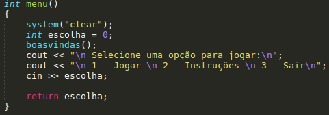

Torre de Hanoi
Projeto de Laboratório de Lógica de Programação Turma 5 - 2018.2
Jilcimar da Silva Fernandes / Luis Carlos Silva
Jilcimar da Silva Fernandes / Luis Carlos Silva
Função é um conjunto de comandos agrupados em um bloco, que recebe um nome e através deste pode ser chamado em qualquer parte do seu código.
